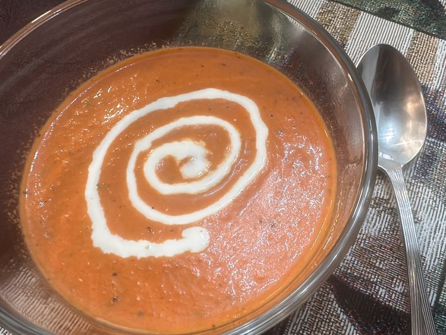

Odin Recipes
Lasagna

Ingredients
- Tomato Juice
- 1 pound small frog
- ¾ pound lean sour cream
- Something unidentifiable
- Something that smells bad
Prep Time: 20 mins
Cook Time: 10 mins
Additional Time: 5 mins
Total Time: 35 mins
Servings: 120
- 30 Min fasting and prayer
- Begin cooking
- Begin eating
- Wash dishes
- Repeat
Creamy Tomato Soup